3DVQL Visualization Gallery
Representative prediction videos from RGB, depth, and point-cloud streams.
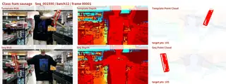
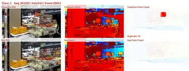
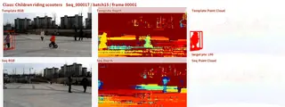
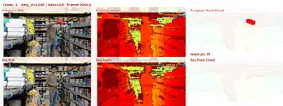
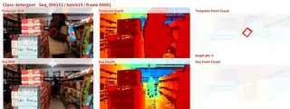
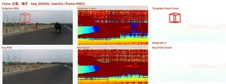
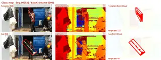
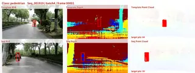
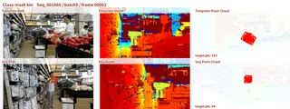
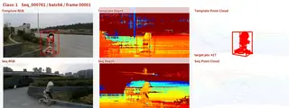
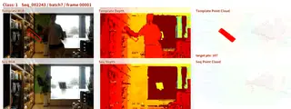
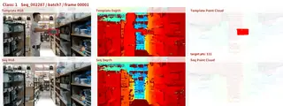
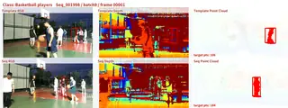
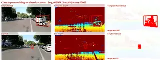
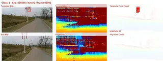
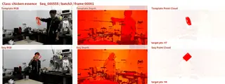
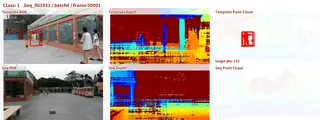
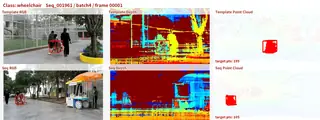
Figure 1: Representative 3DVQL localization videos sampled from the new visualization set.
Abstract
Visual query localization aims to predict the spatial-temporal response of the most recent occurrence in a sequence given a query. While prior VQL research mainly focuses on 2D videos, 3DVQL makes the first attempt to study visual query localization in the 3D world. The benchmark contains 2,002 sequences, around 170K frames, and 6.4K response track segments from 38 object categories. Each sequence provides aligned point clouds, RGB images, and depth images, with manually verified annotations for high-quality multimodal 3D VQL evaluation. Based on this benchmark, we construct representative RGB-PC baselines and introduce LaF, a lift and attention fusion algorithm that lifts 2D features into 3D space and improves multimodal visual query localization performance.
3DVQL Benchmark
2,002
Sequences
170K+
Annotated Frames
6.4K
Response Tracks
38
Object Classes
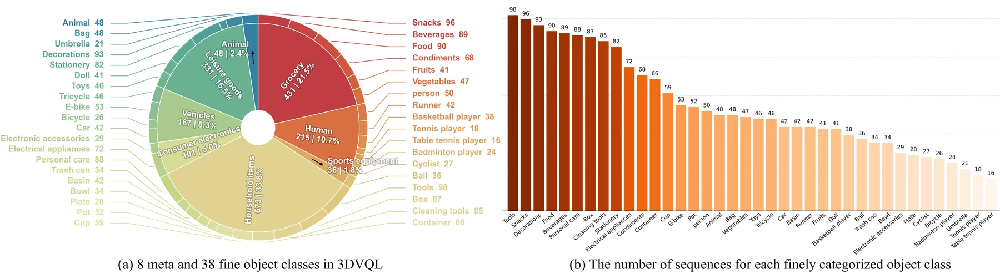
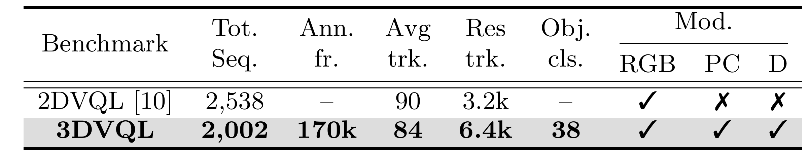
Dataset Samples
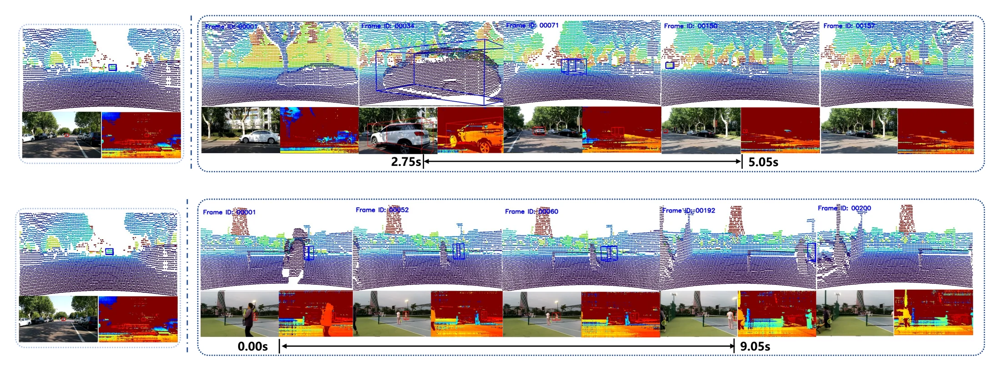
LaF: Lift and Attention Fusion
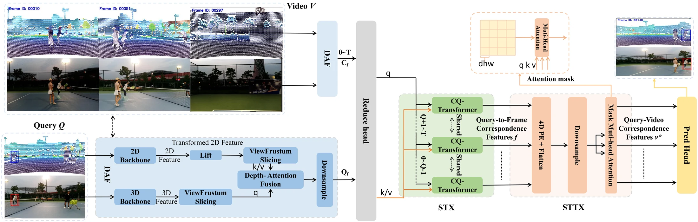
LaF lifts 2D pixel features into 3D space by expanding each image token along its viewing ray, then restricts cross-modal attention to voxels inside the camera frustum. Multi-head attention along the depth axis aligns RGB and point-cloud evidence, while query-conditioned decoding and a local-window spatiotemporal Transformer model the most recent occurrence across the sequence.
Results
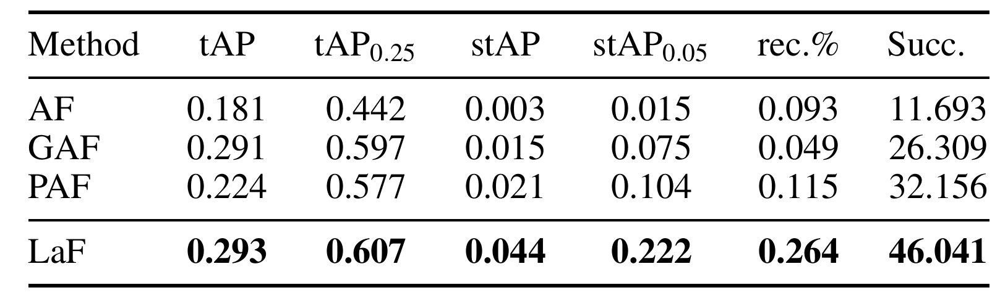
LaF reaches 46.041 Succ. and 0.222 stAP0.05, improving 3D spatio-temporal localization over AF, GAF, and PAF baselines.
Qualitative Results
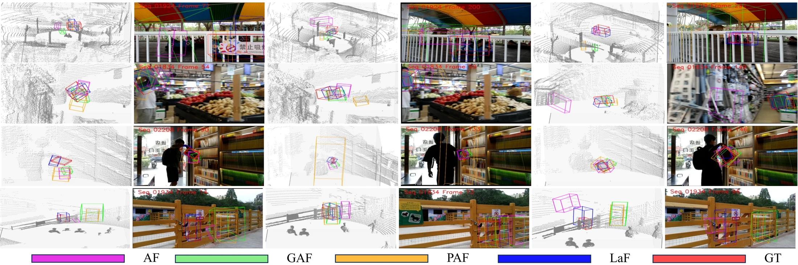
Additional Visualizations
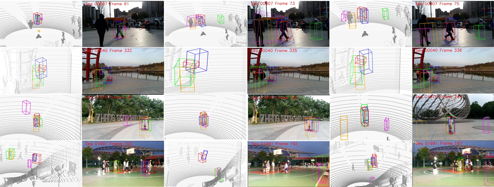
Highlighted Dynamic Examples
Larger animated examples showing multimodal 3DVQL predictions across diverse scenes and target categories.
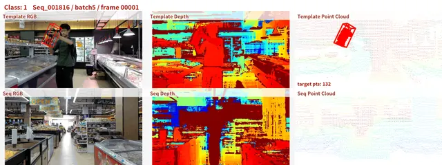
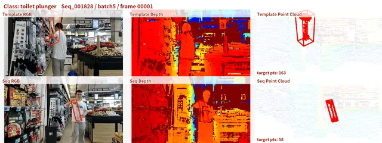
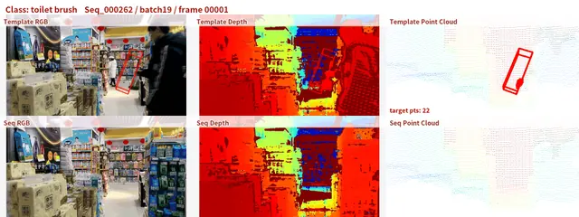
Dataset and Code
Poster Preview
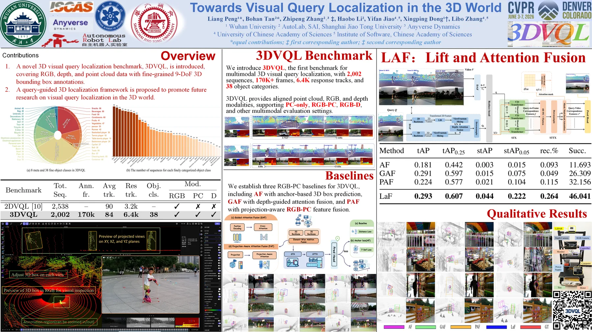
BibTeX
@inproceedings{peng2026towards,
title={Towards Visual Query Localization in the 3D World},
author={Peng, Liang and Tan, Bohan and Zhang, Zhipeng and Li, Haobo and Jiao, Yifan and Dong, Xingping and Zhang, Libo},
booktitle={Proceedings of the IEEE/CVF Conference on Computer Vision and Pattern Recognition},
pages={41406--41415},
year={2026}
}